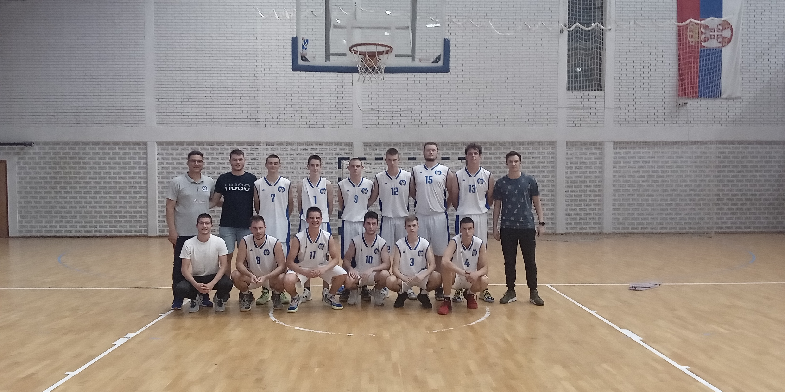

Prvotimci zavrsili sezonu rezultatom 3 - 13 i tako zadrzali najbolje sanse za prvi pik na predstojecem draftu.
Sastav za sezonu 22/23. Trener Bojan Kozomora, Mrdjan, Djakovic, Okuka, Milosev, Micevic, Kosjer, Stanic, Sudjic D., Zoki, Jelic, Sudjic U., Savic, Petric, Aleksandar Davidovic
Vec od samog pocetka sezone, ekipa je hendikepirana povredom najvaznijeg igraca Aleksandra Davidovica. Njegov izostanak je ostavio trag na rezultate.
Kao ubedljivo najmladja ekipa u seniorskom takmicenju, Marina je u kljucnim momentima zaostajala u prekopotrebnom iskustvu na nekoliko utakmica. Rezultat je mogao biti bolji.
Spor pocetak sezone i zavrsetak polusezone sa jednom pobedom nije obeshrabrio nase momke. U drugom delu sezone su znacajno podigli formu i ostvarili duplo veci broj pobeda nego u prvom delu. Dve pobede.
"Sledi veoma bitna medjusezona, postoje spekulacije o raznim pojacanjima, ali je pre svega bitno da se leto iskoristi za individualan napredak." izjavio je Uros Savic.
| Ekipa | Pobede | Porazi |
|---|---|---|
| Denver | 13 | 3 |
| Miami | 10 | 6 |
| Boston | 6 | 10 |
| Marina | 3 | 13 |